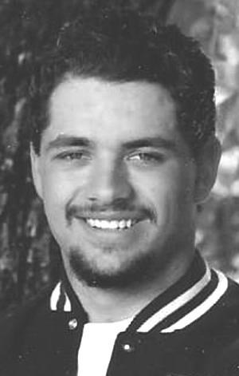

"Art and love are the same thing: It's the process of seeing yourself in things that are not you" - Chuck Klosterman
Gallery
Partnership
Medium - Acrylic on canvas
Dreamlike composition blending organic forms with the fragility of a single line portrait.

Looking Heavenward
Photograph
A low-angle shot, framing the sky with the dark, organic shapes of the forest canopy.
French Idiology
Medium - Oil on canvas
Floral adornment on a vintage lamppost, painted with a soft, atmospheric touch.
Perception
Photograph
A moment captured at the edge of the sea, where the raw beauty of the natural world is on full display.
Oakland Temple - In Progress
Medium - Acrylic on canvas
Underpainting for a religious temple, showing the initial stages of form and color development.
Morning Glory
Photograph
A glimpse into the heart of a redwood ecosystem, showcasing the symbiotic relationship between towering trees and flourishing undergrowth.
Inspiration
Art, to me, is a form of expression, a window into the depths of the human soul. It offers a unique perspective on the world, and each piece is a personal interpretation, a visual exploration of my surroundings. I am particularly drawn to the challenge of capturing fleeting moments in time, striving to convey the emotions felt within those very instances. My artistic journey was ignited by Michael Mahoney. His artistic abilities, coupled with his patience in occasionally guiding me, fostered a deep love and fascination for the artistic world. I am profoundly grateful for his influence, as well as the support of every family member who has contributed to my growth. Ultimately, my goal extends beyond simply developing and refining my skills. I aim to inspire viewers to experience the world with a renewed sense of wonder, as if seeing it's beauty for the first time.
